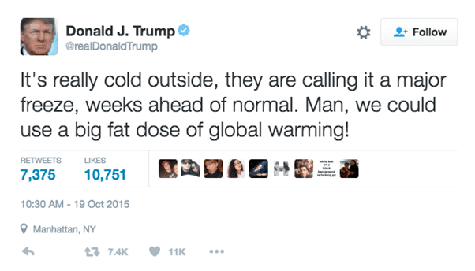

Climate change
What is it and how does it work?
Learn more.png)
Yes climate has changed a lot over the Earth’s 4.5-billion-year history. There is a natural cycle of warm and cold periods that happen over hundreds of thousands of years.
But when people talk about climate change, they mean human-made climate change. Human activity such as burning fossil fuels, cutting down trees, and farming livestock are contributing to the Earth’s rising temperature. Changes that would normally happen over thousands of years are happening in decades. The last eleven years stand out as the eleven warmest to be directly observed. This rapid warming cannot be explained by natural cycles. Multiple studies have found roughly 97% of climate scientists agree that humans are responsible for climate change.

Yes areas of the earth have experienced extreme cold weather events bringing snow and freezing rain.

Yes if you put an ice cube in a cup and let it melt, the water level would not change. This is because the floating ice displaces a volume of water equal to its own weight. When it melts the ice cube turns into water with the same mass, filling the exact volume it displaced, meaning no change in water level.
But this is not the same for an iceberg floating in the sea because of one key difference, salt. Sea ice is made of freshwater, which is less dense than salt water. This means when the floating ice becomes liquid its volume is bigger than the volume of seawater it displaced. This raises the sea level.
This effect is small in comparison to the melting of land ice and thermal expansion of the oceans.
Yes plants need carbon dioxide (CO2) as part of photosynthesis:
CO2 itself does not cause problems. It is a part of the natural global ecosystem and necessary for plants to live.
But the amount of CO2 produced by humans is an issue. Before the Industrial revolution carbon dioxide levels in the atmosphere was 280 parts per million (ppm) or less. Today, CO2 levels are at the highest ever in human history, at 443 ppm. With more and more forests being cut down, largely to produce food, the amount of carbon dioxide removed from the atmosphere by plants is decreasing.
Yes climate change is a massive issue that can feel too big to tackle. There is no easy fix that will magically solve it.
But there are many things we can do to help. Many organisations have tips on small changes we can make to our everyday lives. Click here to read some suggestions from the UN environment programme.
What is it and how does it work?
Learn moreWhat are the consequences of climate change and how is it affecting us?
Learn moreInvestigate how politics is shaping our response to climate change
Learn more